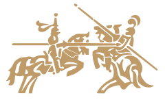

In 1119, the French knight, Hugues de Payens, created a monastic order for the protection of pilgrims coming to and from Jerusalem. King Baldwin II of Jerusalem granted the wing of the Royal Palace located on the Temple Mount as headquarters for the knights. Hence, the order become known as Knights Templar ever since.
The Temple Mount was located directly above the ruins of the Temple of Solomon, King of ancient Israel. The knights began excavation works immediately....
During excavation the knights discovered a crypt which contained a number of ancient and mysterious artefacts. One of those artefacts was the tool of Hiram Abif, the chief architect of Solomon's Temple. This very powerful artefact allowed him to perform very complex calculations necessary for the construction of the Temple. Although its origins are not known, some say it was the legacy of an ancient and mysterious civilisation. Others say that it was God Himself, who gave it to King Solomon.
When Hugues de Payens and his knights returned to France, the Knights Templar order grew rapidly, achieving great wealth, prominence and power. Armed with the newly discovered ancient and mysterious lore, they began Gothic style architecture and laid down the foundation of the modern banking system. With Knights Templar as guardians of the peace, Europe enjoyed 200 years of peace and prosperity.
Although the original artefact of Hiram Abif was eventually lost, Knight Templars made a number of accurate replicas, as the one above. They were used exclusively by the members of the order.
At the end of 19th century a number of manufacturers began mass production of slide rules, which are in fact some variants of the tool used by Hiram Abif. Although nobody remembered Kinght Templars and their discoveries, one of the most prominent German manufacturer or slide rules, Faber Castell, retained reference to Knight Templars in their logo depicting two knights on horses. 